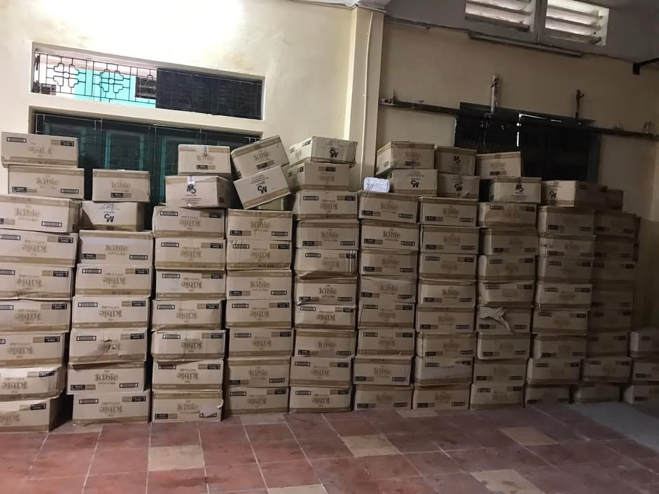
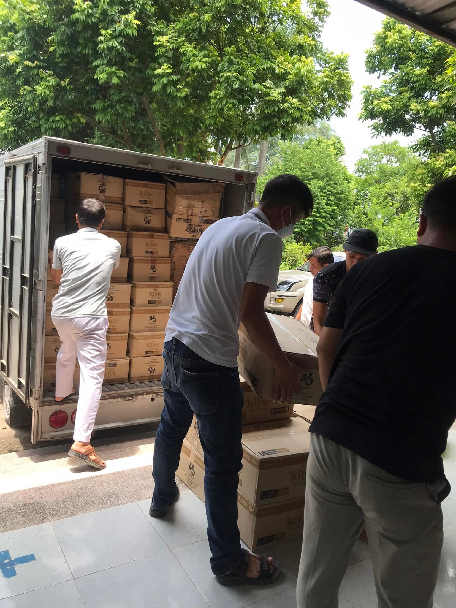
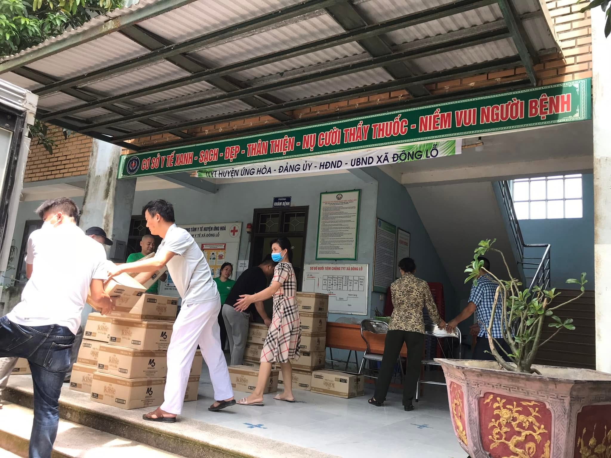
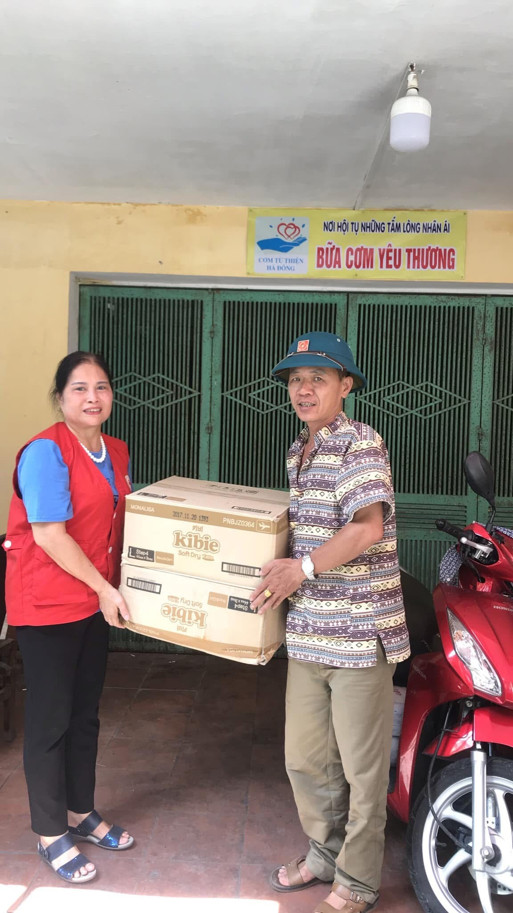
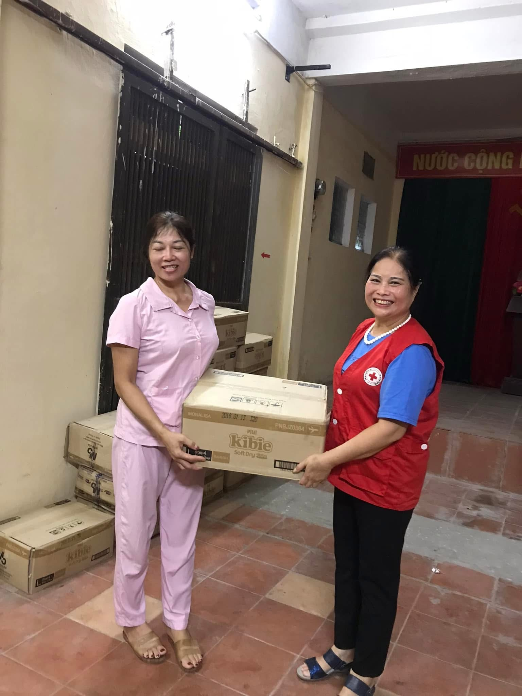

Với mong muốn lan tỏa tinh thần sẻ chia và đồng hành cùng cộng đồng, Premilac Việt Nam đã phối hợp cùng Nhóm Cơm từ thiện Hà Đông triển khai chương trình trao tặng bỉm trẻ em đến các em nhỏ và gia đình có hoàn cảnh khó khăn thông qua Trung tâm Y tế xã Đồng Lỗ (huyện Ứng Hòa, Hà Nội), Hội Chữ thập đỏ cùng nhiều đơn vị trên địa bàn.
Thông qua sự kết nối của Nhóm Cơm từ thiện Hà Đông, hàng nghìn sản phẩm bỉm đã được vận chuyển và trao tận tay các đơn vị tiếp nhận để phân phối đến đúng đối tượng thụ hưởng, góp phần hỗ trợ các gia đình có trẻ nhỏ giảm bớt chi phí chăm sóc và mang đến điều kiện sinh hoạt tốt hơn cho các em trong những năm tháng đầu đời.
Hoạt động có sự phối hợp của đội ngũ tình nguyện viên, cán bộ y tế và chính quyền địa phương, giúp những phần quà ý nghĩa được trao đến người dân một cách kịp thời, thiết thực và hiệu quả.

Đối với Premilac, mỗi chương trình vì cộng đồng không chỉ mang ý nghĩa hỗ trợ vật chất mà còn là dịp lan tỏa tinh thần nhân ái và trách nhiệm xã hội. Doanh nghiệp luôn mong muốn đồng hành cùng các tổ chức thiện nguyện để góp phần mang đến nhiều giá trị tích cực cho trẻ em và các gia đình trên khắp cả nước.
Premilac Việt Nam trân trọng cảm ơn Nhóm Cơm từ thiện Hà Đông, các đơn vị y tế, Hội Chữ thập đỏ, chính quyền địa phương cùng các tình nguyện viên đã phối hợp triển khai chương trình, góp phần đưa những phần quà ý nghĩa đến với các em nhỏ và các gia đình cần được hỗ trợ.


Trong thời gian tới, Premilac sẽ tiếp tục đồng hành cùng nhiều hoạt động an sinh xã hội và thiện nguyện, góp phần lan tỏa những giá trị nhân văn, vì một cộng đồng khỏe mạnh và phát triển bền vững.
Thông tin chương trình
- Hoạt động
- Trao tặng bỉm trẻ em
- Đơn vị kết nối
- Nhóm Cơm từ thiện Hà Đông
- Địa điểm
- Trung tâm Y tế xã Đồng Lỗ (huyện Ứng Hòa, Hà Nội) và các đơn vị tiếp nhận trên địa bàn
- Đối tượng
- Trẻ em và các gia đình có hoàn cảnh khó khăn
- Mục tiêu
- Chung tay chăm sóc trẻ em, lan tỏa tinh thần sẻ chia và trách nhiệm với cộng đồng